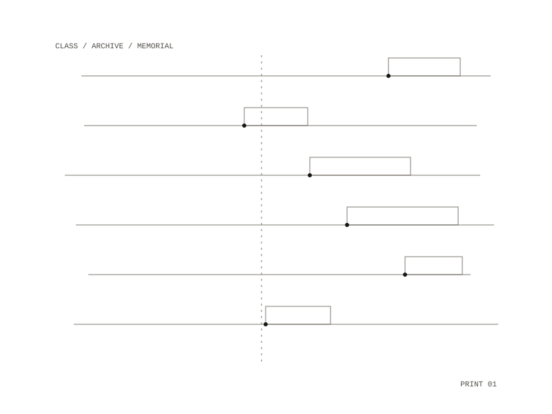

05 / project
A Ladder for Constance
Writing in Animal Shelter no. 6, from Semiotext(e)
A piece on Constance Debré.

The piece
It starts from Emu Butch, the novel, which is full of references to Debré. They were meant as scaffolding, to come down once the book stood up.
The issue
Animal Shelter is edited by Hedi El Kholti. Issue 6 circles class, sex, the archive and memorials, with a large part given to poetry. Its writers include Dodie Bellamy, Chris Kraus, Eileen Myles, Wayne Koestenbaum, Gary Indiana, Rachel Kushner and Colm Tóibín.
Published in
Animal Shelter no. 6
Art, Sex, Literature
Semiotext(e)
Animal Shelter no. 6
Art, Sex, Literature
Semiotext(e)